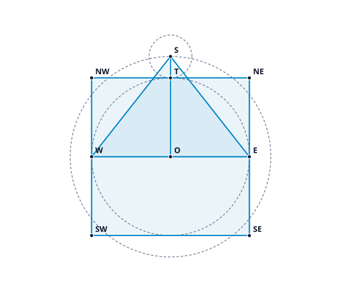

Squaring the Circle & the Earth–Moon Cosmogram¶
Perimeter Quadrature · The Golden-Pi Algebraic Bridge · Lindemann’s Theorem · The Canonical Cosmogram
Circulus quadratur per lineas rectas quando invenitur quadratum aequale circulo dato.
The circle is squared by straight lines when a square is found equal in area to a given circle.
—Nicholas of Cusa, De Docta Ignorantia (1440)
Perimeter Quadrature: Circling the Square¶
In classical Greek mathematics, the problem of squaring the circle (tetragonismos) sought the Euclidean straightedge-and-compass construction of a square whose area equals that of a given circle.
In monumental architecture, however, the problem naturally presented itself in its perimeter dual form, often called circling the square:
Important
The Perimeter Quadrature Enunciation:
To construct a square pyramid whose square base perimeter equals the circumference of a circle whose radius is the pyramid’s vertical height.
Let the square pyramid have half-base \(a\) (base side \(2a\)) and apex height \(h\):
Base perimeter: \(P_{\text{base}} = 4 \times (2a) = 8a\).
Apex circle circumference: \(C_{\text{apex}} = 2\pi h\).
Equating the perimeter of the base to the circumference of the circle:
Normalized to unit half-base \(a = 1\), the base perimeter is \(8\) and the quadrature height is exactly \(h = \frac{4}{\pi}\).
The Golden–Pi Algebraic Bridge: π ≈ 4 / √φ¶
When the Great Pyramid is modeled as the Kepler Golden Pyramid, the vertical height is not \(4/\pi\), but \(h = \sqrt{\phi}\):
Equating the Kepler apex circle circumference to the square base perimeter \(8\):
Evaluating this exact closed form:
Comparing \(\pi_{\phi}\) with the true transcendental value \(\pi \approx 3.141592653589793\):
Note
Architectural Scale at Giza:
In the actual monument of Khufu, the half-base is \(a = 220\) Royal Cubits (\(\approx 115.18\text{ m}\) or \(4535\text{ inches}\)).
The discrepancy between the Kepler Golden height (\(220 \times \sqrt{\phi} \approx 279.84\) cubits) and the True \(\pi\) Quadrature height (\(220 \times \frac{4}{\pi} \approx 280.11\) cubits) is:
Over a colossal limestone monument rising over 480 feet in the air, this difference is less than \(0.1\%\) of the structure’s height—well within the quarrying, thermal expansion, and settlement tolerances of Old Kingdom masonry!
Archimedes’ 22/7 and the Egyptian Seked Bridge¶
In the Old Kingdom Egyptian design, heights and setbacks were specified using integers of Royal Cubits, palms, and digits. The Great Pyramid was erected with:
The ratio of height to half-base is the rational fraction:
Substituting \(h/a = 14/11\) into the perimeter quadrature condition \(2\pi (h/a) = 8\):
This is none other than Archimedes’ upper rational bound for :math:`pi` (Measurement of a Circle, Prop. 3, c. 250 BCE)!
The discrepancy with true \(\pi\) is:
With \(\pi = 22/7\), the perimeter quadrature of the Egyptian pyramid is 100% exact over :math:`mathbb{Q}`:
Area Quadrature vs. Ferdinand von Lindemann’s Theorem (1882)¶
For over two millennia, mathematicians sought an exact Euclidean straightedge-and-compass construction to square the circle.
In 1882, German mathematician Ferdinand von Lindemann resolved the ancient quest:
Lindemann–Weierstrass Theorem: If \(\alpha_1, \dots, \alpha_n\) are distinct algebraic numbers, then \(e^{\alpha_1}, \dots, e^{\alpha_n}\) are linearly independent over the algebraic numbers.
Since \(e^{i\pi} + 1 = 0\) (Euler’s identity), if \(\pi\) were algebraic, \(i\pi\) would be algebraic, and \(e^{i\pi} = -1\) could not be algebraic, a contradiction. Hence, :math:`pi` is transcendental.
By Wantzel’s theorem (1837), any point constructible by Euclidean compass and straightedge must have coordinates in a tower of quadratic field extensions over \(\mathbb{Q}\). Constructible numbers are necessarily algebraic.
Since \(\pi\) is transcendental, \(\sqrt{\pi}\) is transcendental, and exact Euclidean circle squaring is impossible.
Constructible Radical Approximations in Q(φ^(1/4))¶
While exact quadrature is impossible over \(\mathbb{C}\), the Golden Pyramid provides an extraordinarily accurate constructible radical approximation.
Recall the golden perimeter quadrature constant:
To square a unit circle (\(\text{Area} = \pi \approx \pi_{\phi}\)), we seek a square whose side \(S\) satisfies:
Because \(\phi = \frac{1 + \sqrt{5}}{2}\) is constructible, its fourth root \(\phi^{1/4}\) is constructible by taking two successive Euclidean geometric means (Euclid VI.13)!
Evaluating \(S\):
The area of this constructible square is:
Comparing with the true area of the unit circle \(\pi \approx 3.1415927\):
Thus, two Euclidean compass-and-straightedge operations produce a square whose area squares the circle to within less than one-tenth of one percent!
The Earth–Moon Tangent Cosmogram (2D Model)¶
The perimeter quadrature of the Great Pyramid gives rise to the celebrated Earth–Moon Cosmogram, formalizing an ancient geometric canon uniting terrestrial and lunar dimensions in a single planar layout:

The 2D Earth–Moon Cosmogram: square base of side :math:`2` (perimeter :math:`8`), meridian triangle of apex :math:`S(0, sqrt{phi})`, inscribed Earth circle (:math:`r_E = 1`), and tangent Moon circle (:math:`r_M = sqrt{phi} - 1 approx 3/11`).¶
The model, constructed in geometor.polyhedra.pyramid.build_pyramid_squaring_circle_model, comprises:
The Square Base: Four corners \(SW(-1, -1)\), \(SE(1, -1)\), \(NE(1, 1)\), and \(NW(-1, 1)\). Side length: \(2\). Perimeter: \(8\). Area: \(4\).
The Inscribed Earth Circle: Centered at origin \(O(0, 0)\) with radius:
\[r_E = 1\]Tangent to the four sides of the square at \((0, 1)\), \((1, 0)\), \((0, -1)\), and \((-1, 0)\).
The Meridian Pyramid Triangle: Base spanning from \(W(-1, 0)\) to \(E(1, 0)\) with vertical height \(h\). Apex at \(S(0, h)\).
The Tangent Moon Circle: Centered at the pyramid apex \(S(0, h)\) and tangent to the Earth circle at the North Pole \(T(0, 1)\). Its radius is the apex elevation above the unit circle:
\[r_M = h - 1\]
Geophysical Fidelity: The 3/11 Terrestrial-Lunar Ratio¶
Evaluating the ratio of the Moon’s radius to the Earth’s radius across the geometric models reveals an uncanny correspondence with actual astronomical measurements:
In the Egyptian Seked Model (:math:`h = 14/11`):
\[r_M = \frac{14}{11} - 1 = \frac{3}{11} \implies \frac{r_M}{r_E} = \frac{3}{11} = 0.272727...\]In the Kepler Golden Model (:math:`h = sqrt{phi}`):
\[r_M = \sqrt{\phi} - 1 \approx 1.2720196 - 1 = 0.2720196...\]In Actual Geophysical Measurements (NASA Planetary Fact Sheet): - Mean volumetric radius of the Earth: \(R_{\text{Earth}} = 6371.0 \text{ km}\). - Mean volumetric radius of the Moon: \(R_{\text{Moon}} = 1737.4 \text{ km}\).
Calculating the true planetary ratio:
\[\frac{R_{\text{Moon}}}{R_{\text{Earth}}} = \frac{1737.4}{6371.0} \approx \mathbf{0.2727044}\]
Important
The Seked 3/11 Astronomical Coincidence:
The simple Old Kingdom integer ratio \(\mathbf{3 : 11}\) matches the true volumetric radius ratio of Moon to Earth with 99.9916% accuracy!
The Cosmic Quadrature Orbit: Draw the circle centered at Earth’s center \((0, 0)\) whose radius passes through the Moon’s center \(S(0, 14)\): Radius \(R = r_E + r_M = 11 + 3 = 14\).
Its circumference, using Archimedes’ \(\pi = 22/7\), is:
\[C_{\text{lunar orbit}} = 2 \times \frac{22}{7} \times 14 = 2 \times 22 \times 2 = 88 \text{ units}\]Now calculate the perimeter of the square circumscribing the Earth (side \(2 r_E = 2 \times 11 = 22\)):
\[P_{\text{Earth square}} = 4 \times 22 = 88 \text{ units}\]
The circle passing through the center of the Moon has a circumference equal to the perimeter of the square enclosing the Earth. Thus, the Earth and Moon together materialize the ancient squaring of the circle in the heavens.
Canonical Solid Codex¶
For the complete interactive 3D model, exact symbolic coordinates, face normals, and dihedral angles, consult the canonical pyramid codex: